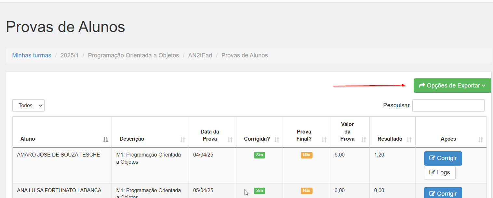
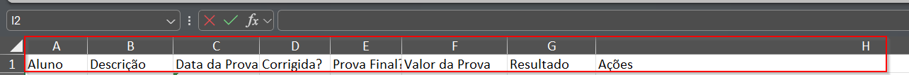
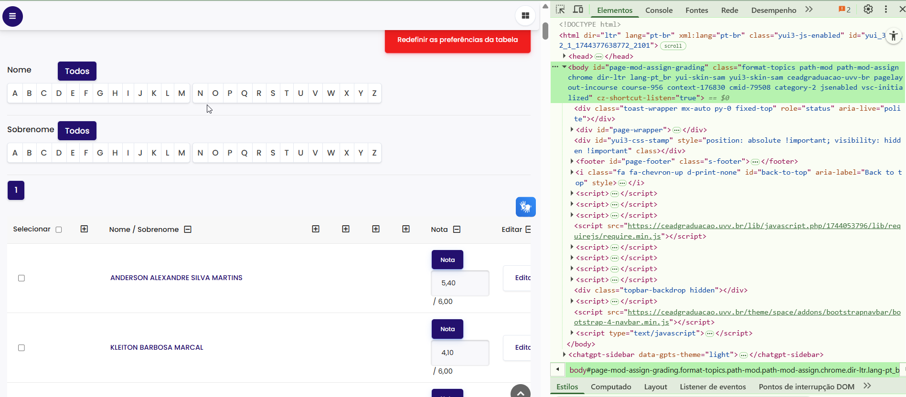
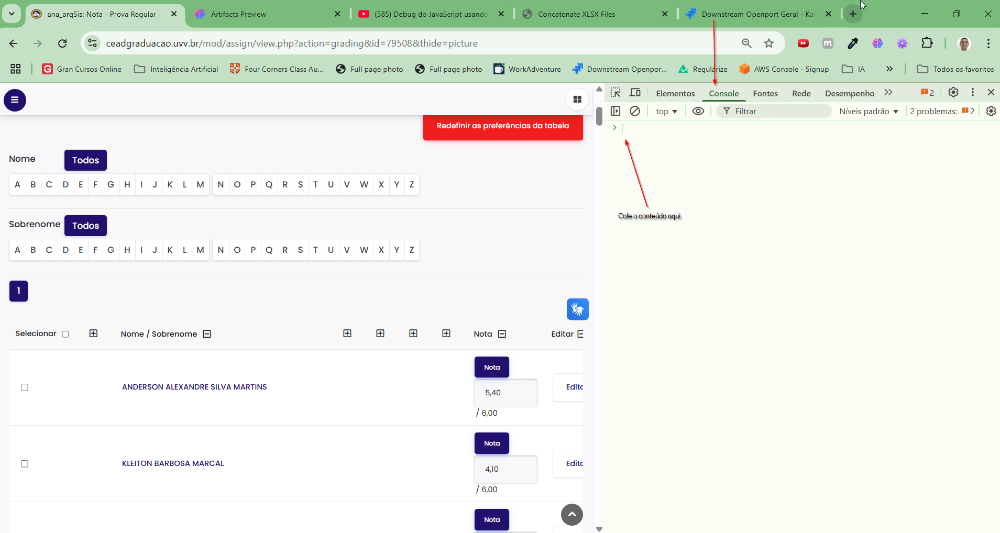

Processamento de Notas e geração de script
Selecione um ou vários arquivos XLSX exportado com as notas:
Processar arquivo(s)
Instruções de Uso
Exporte o relatório de notas como excel

Mantenha o cabeçalho original do relatório

Selecione um ou vários relatórios XLSX no botão escolher arquivo e clique em processar
O conteúdo gerado será copiado para a memória
Abra a página de lançamento de notas e acione a tecla F12

Na aba console cole o conteúdo copiado e pressione enter

Versão 2